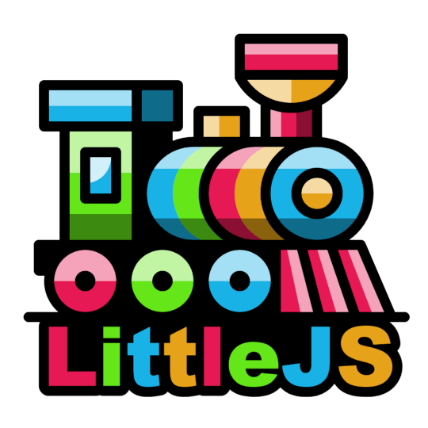

gamepadConnected(gamepad) → booleanengineInput.js:350Returns true if passed in gamepad is connected
gamepadnumber optional

LittleJS 1.30.0LittleJS Input System
gamepadConnected(gamepad) → booleanengineInput.js:350Returns true if passed in gamepad is connected
gamepad number optionalgamepadIsDown(button, gamepad) → booleanengineInput.js:293Returns true if gamepad button is down
button numbergamepad number optionalgamepadStick(stick, gamepad) → Vector2engineInput.js:329Returns gamepad stick value
stick numbergamepad number optionalgamepadStickCount(gamepad) → numberengineInput.js:360Returns how many control sticks the passed in gamepad has
gamepad number optionalgamepadVibrate(gamepad, duration, strongMagnitude, weakMagnitude, startDelay)engineInput.js:374Pulse a gamepad's vibration hardware using the dual-rumble effect if it exists Strong magnitude is usually the left side motor, weak magnitude is usually the right side motor
gamepad number optionalgamepad index
duration number optional, default 200effect duration in ms, browsers limit it and the delay to 5 seconds together
strongMagnitude number optional, default 1strong (left) motor intensity, 0 to 1
weakMagnitude number optional, default 1weak (right) motor intensity, 0 to 1
startDelay number optional, default 0delay in ms before the effect starts
gamepadVibrateStop(gamepad)engineInput.js:391Stop vibration on a gamepad
gamepad number optionalgamepad index
gamepadWasPressed(button, gamepad) → booleanengineInput.js:305Returns true if gamepad button was pressed
button numbergamepad number optionalgamepadWasReleased(button, gamepad) → booleanengineInput.js:317Returns true if gamepad button was released
button numbergamepad number optionalinputClear()engineInput.js:170Clears all input
inputClearKey(key, device, clearDown, clearPressed, clearReleased)engineInput.js:124Clear a key's state, so it stops reading as down, pressed or released this frame; a key still held is not pressed again until it is let go
key string|numberA key code like 'Space', or a mouse or gamepad button number
device number optional, default 00 for the keyboard and mouse, gamepad n is device n + 1
clearDown boolean optional, default trueClear the held state
clearPressed boolean optional, default trueClear the pressed this frame state
clearReleased boolean optional, default trueClear the released this frame state
keyDirection(up, down, left, right) → Vector2engineInput.js:248Returns input vector from arrow keys or WASD if enabled
up string optional, default ArrowUpdown string optional, default ArrowDownleft string optional, default ArrowLeftright string optional, default ArrowRightkeyIsDown(key, device) → booleanengineInput.js:201Returns true if device key is down
key string|numberdevice number optional, default 00 for the keyboard and mouse, gamepad n is device n + 1
keyWasPressed(key, device) → booleanengineInput.js:216Returns true if device key was pressed this frame
key string|numberdevice number optional, default 00 for the keyboard and mouse, gamepad n is device n + 1
keyWasReleased(key, device) → booleanengineInput.js:231Returns true if device key was released this frame
key string|numberdevice number optional, default 00 for the keyboard and mouse, gamepad n is device n + 1
mouseWasPressed(button) → booleanengineInput.js:272Returns true if mouse button was pressed
button numbermouseWasReleased(button) → booleanengineInput.js:282Returns true if mouse button was released
button numberpointerLockExit()engineInput.js:441Request to unlock the pointer
pointerLockIsActive() → booleanengineInput.js:450Check if pointer is locked (true if locked)
pointerLockRequest()engineInput.js:428Request to lock the pointer, for a mouse; a device with only touch refuses it, and a press that came from a touch does not ask, since a locked pointer stops the touch gamepad taking its fingers
setInputMouseMoveThreshold(threshold)engineInput.js:101Set the screen-pixel mouse movement per frame that counts as using the mouse
threshold numbersetInputPreventDefault(preventDefault)engineInput.js:96Prevents input continuing to the default browser handling This is useful to disable for html menus so the browser can handle input normally, the right click menu included; over an html text field that menu always shows
preventDefault boolean optional, default truetouchGamepadButtonPos(button) → TouchGamepadButtonPos|undefinedengineInput.js:1404Returns where a button of the touch gamepad is on screen, to draw an icon of the game's own over it
button number// in gameRenderPost, an icon centered in the action button that fades with it
const b = touchGamepadButtonPos(0);
if (b && b.alpha)
{
const color = hsl(0, 0, 1, b.alpha / touchGamepadAlpha); // fades with the buttons
drawTile(b.pos, vec2(b.size * .6), actionIcon, color, 0, false, undefined, glEnable, true);
}usingGamepadInput() → booleanengineInput.js:114Is a gamepad the most recently used input device?
usingKeyboardInput() → booleanengineInput.js:110Is the keyboard the most recently used input device?
usingMouseInput() → booleanengineInput.js:106Is the mouse the most recently used input device?
vibrate(pattern)engineInput.js:412Pulse the vibration hardware if it exists
pattern number|Array<number> optional, default 100single value in ms or vibration interval array
vibrateStop()engineInput.js:420Cancel any ongoing vibration
gamepadPrimary : numberengineInput.js:84Primary gamepad index, automatically set to first gamepad with input
inputMouseMoveThreshold : number default 6engineInput.js:74Screen-pixel mouse movement per frame that counts as "using the mouse" (so sub-pixel hand jitter doesn't steal focus from the keyboard/gamepad).
inputPreventDefault : booleanengineInput.js:79Prevents input continuing to the default browser handling (true by default)
isUsingGamepad : booleanengineInput.js:56True if a gamepad is the most recently used input device. Equivalent to usingGamepadInput(); derived from lastInputDevice each frame.
lastInputDevice : 'mouse'|'keyboard'|'gamepad'engineInput.js:67The most recently used input device: 'mouse' | 'keyboard' | 'gamepad'. Sticky: it holds its value while every device is idle, so a mouse-follow control (e.g. paddle = mousePos) won't snap back the instant the stick/keys are released. With several devices in play at once (e.g. keyboard to move + mouse to aim) it tracks whichever was touched last each frame, so it may alternate — that's intended; use it to pick which control drives a shared action. Updated every frame by inputUpdate().
mouseDelta : Vector2engineInput.js:28Mouse movement delta in world space
mouseDeltaScreen : Vector2engineInput.js:33Mouse movement delta in screen space
mouseInWindow : booleanengineInput.js:50True if mouse was inside the document window, set to false when mouse leaves
mousePos : Vector2engineInput.js:18Mouse pos in world space
mousePosScreen : Vector2engineInput.js:23Mouse pos in screen space
mouseWheel : numberengineInput.js:38Mouse wheel delta this frame
touchPinch : numberengineInput.js:45Touch pinch delta this frame, in the mouse wheel's units: two fingers moving apart are negative, as the wheel turned up is, and moving together positive, 1 for every 50 pixels; added to mouseWheel while touchPinchWheel is on, so a game that zooms with the wheel zooms with a pinch
isTouchDeviceengineInput.js:88True if a touch device has been detected
TouchGamepadButtonPos : ObjectengineInput.js:1381Where a touch gamepad button is on screen, its size and how visible it is
pos Vector2Its center in screen space, as mousePosScreen
size numberIts diameter in screen pixels
alpha numberHow visible the gamepad is now, 0 when it has faded out, up to touchGamepadAlpha, 1 in the debug gamepad view